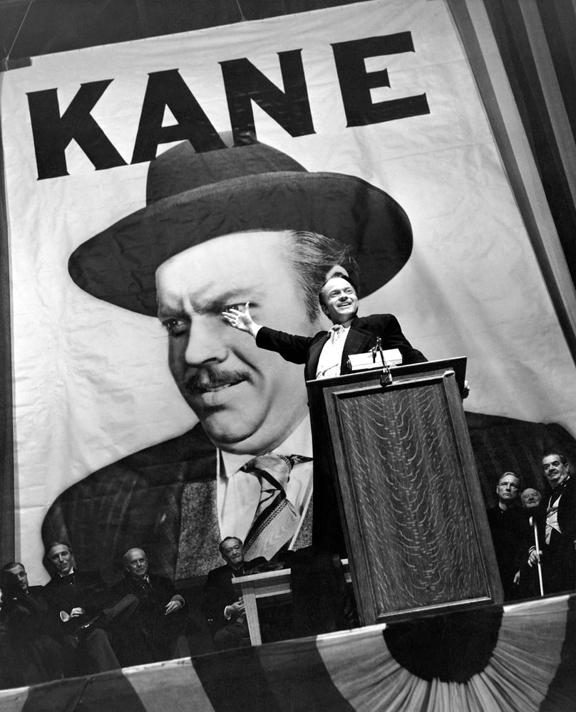

Citizen Kane, Still (Kane's Campaign Speech)
Orson Welles · 1941 · Publicity still, black and white
In copyright. Look and learn: shown for study, not for download.
This publicity photograph by the RKO still photographer Alexander Kahle ran on the cover of International Photographer in January 1941. Orson Welles signed with RKO on 21 August 1939 to make two films, with control of the story, cast and crew and the right of final cut, which no studio had granted before. Kane's ageing make-up was made by Maurice Seiderman, a junior in RKO's make-up department. For the oldest Kane it took three and a half hours to apply, and Welles often arrived on set at 2:30 in the morning.